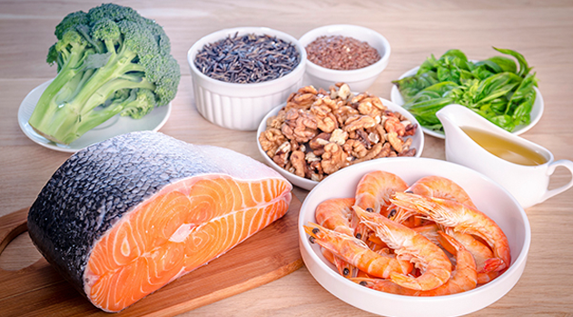

<!DOCTYPE html>
<html>
		<head>
		  <meta charset="utf-8">
		  <meta http-equiv="X-UA-Compatible" content="IE=edge">
		  <meta name="viewport" content="width=device-width, initial-scale=1">
		  <title>Department of Medical Service</title>

		  <!-- Bootstrap -->
		  <link rel="stylesheet" type="text/css" href="../css/bootstrap.css">
		  <link rel="stylesheet" type="text/css" href="../css/bootstrap-theme.css">

		  <!-- Custom Css -->
		  <link rel = "stylesheet" href = "../css/mine.css" >
		  <link rel="stylesheet" type="text/css" href="../css/custom.css">
		  

		</head>
	
	<body>
		<!-- For header -->
		<div id = "head"> </div>		


		<div class = "container " id = "main-content">
			<div class="col-md-8 margin-bot"> 
				 <div class = "title-without-bar">
				 	<h4>က်န္းမာေရးႏွင့္ညီေသာအဆီမ်ား ပိုစားျခင္းေၾကာင့္ ႏွလံုးေရာဂါအႏၲရာယ္ေလွ်ာ့ခ်ႏိုင္</h4>
				 </div>
				 
				 <div class="addthis"> 
				 	<div class="date-grey-left"> 
				 		 <p> 22 January 2016 - food </p>
				 	</div>
				 	
				 	 
				 </div>
					 <div class = "parag-news margin-bot">
					  <p>မေကာင္းေသာအဆီမ်ားအစား က်န္းမာေရးႏွင့္ညီၫြတ္ေသာ အဆီမ်ားကို အစားထိုး စားသံုးေပးျခင္းျဖင့္ ႏွလံုးေရာဂါ ျဖစ္ပြားႏိုင္သည့္ အႏၲရာယ္ကို ေလွ်ာ့ခ်ေစႏုိင္ေၾကာင္း တာ့ဖ္တကၠသိုလ္မွ သုေတသီ မ်ား၏ ေလ့လာမႈအရ သိရသည္။<br /></p>
					  <p>က်န္းမာေရးႏွင့္မညီေသာ အဆီမ်ားေလွ်ာ့စားျခင္းျဖင့္ က်န္းမာေရးအက်ိဳးေက်းဇူးမ်ားရရွိႏုိင္သလို က်န္းမာေရးႏွင့္ ညီၫြတ္ ေသာ အဆီမ်ားပိုစားေပးျခင္းေၾကာင့္ မေကာင္းေသာ ကိုလက္စထေရာ ပမာဏေလ်ာ့က်ေစၿပီး ခႏၶာကိုယ္အတြက္ လိုအပ္ ေသာအဆီမ်ား ေပးစြမ္းႏုိင္ေၾကာင္း သုေတသီမ်ားက ေျပာသည္။<br /></p>
					  <p>လူအမ်ား၏ အစားအေသာက္မ်ားတြင္ က်န္းမာေရးႏွင့္ညီ ၫြတ္ေသာအဆီမ်ား ပိုမိုထည့္သြင္းစားေသာက္ျခင္းျဖင့္ ႏွလံုးေရာဂါ ေၾကာင့္ ေသဆံုးႏုိင္မႈတစ္သန္းကို ကာကြယ္ႏိုင္ေၾကာင္း အေမရိကန္ႏွလံုးေရာဂါကုအဖြဲ႕၏ ေဖာ္ျပခ်က္အရ သိရသည္။ က်န္းမာေရးႏွင့္ ညီၫြတ္ေသာ အဆီမ်ားကို ပဲပိစပ္၊ ေျပာင္းႏွင့္ ေနၾကာပန္းဆီ၊ တို႔ဟူး၊ အခြံမာသီးမ်ား၊ အေစ့အဆန္မ်ားႏွင့္ ေဆာ္လမန္၊ မက္ကရယ္၊ ဟယ္ရင္းႏွင့္ ထေရာက္ငါးတို႔ကဲ့သို႔ အဆီမ်ားေသာ ငါးမ်ားတြင္ ေတြ႕ရသည္။<br /></p>
					  <p>
	ႏွလံုးေရာဂါေၾကာင့္ ေသဆံုးသူအမ်ားစုသည္ က်န္းမာေရးႏွင့္ ညီၫြတ္ေသာ အဆီမ်ားစားသံုးမႈနည္းပါးလြန္းျခင္းႏွင့္ ဆက္စပ္မႈရွိၿပီး ႏွလံုးေရာဂါေၾကာင့္ ေသဆံုးသူေပါင္း ၂၅၀,၉၀၀သည္ က်န္းမာေရးႏွင့္မညီေသာ အဆီမ်ားစားသံုးမႈ လြန္ကဲေသာေၾကာင့္ျဖစ္ ေၾကာင္း သုေတသီမ်ားက ေျပာသည္။<br /></p>
					  <p>ယင္းအေရအတြက္မွာ ႏွလံုးေရာဂါေၾကာင့္ တစ္ကမၻာလံုး ေသဆံုးသူအေရအတြက္၏ ၃ ဒသမ ၆ ရာခိုင္ႏႈန္းရွိေၾကာင္း သိရ သည္။ ႏွလံုးေရာဂါျဖင့္ တစ္ကမၻာလံုးေသဆံုးသူစုစုေပါင္း၏ ၇ ဒသမ၇ ရာခိုင္ႏႈန္းမွာ က်န္းမာေရးႏွင့္မညီေသာအဆီမ်ား လြန္ကဲစြာစား ေသာက္ျခင္းေၾကာင့္ျဖစ္သည္။<br /></p>
					  <p>ယင္းေလ့လာမႈမ်ားကို အေျခခံ၍ တစ္ကမၻာလံုးမွ မူဝါဒေရးဆြဲ သူမ်ားသည္ တစ္ကမၻာလံုးႏွလံုးေရာဂါျဖစ္ပြားမႈကို တုိက္ဖ်က္ေရးဦးစားေပး စားသံုးရမည့္ အာဟာရဓာတ္မ်ားကို သတ္မွတ္ေပးရန္ ၎တို႔ႏိုင္ငံမ်ားကို အကူအညီ ေပးသင့္သည္ ဟု သုေတသီမ်ားက ေျပာသည္။        <br /></p>
					</div>
				  <div class="addthis"> 
				 	 
				 </div>


			</div>
			<div class="col-md-4"> 
				<div class ="block-content">
					<!-- latest news -->
					<div class = "panel">
						<h4 class = "mm title-bar">ေနာက္ဆံုုးရသတင္းမ်ား</h4>
						<div class = "panel-body">
							<div class="media">
					            <div class="media-left media-middle ">
					              <a href="news1.html">
					                
					              </a>
					            </div>
					            <div class="media-body media-middle">
					                <p> က်န္းမာေရးႏွင့္ညီေသာ အဆီမ်ား ပိုစားျခင္းေၾကာင့္ ႏွလံုးေရာဂါ အႏၲရာယ္ ေလွ်ာ့ခ်ႏိုင္  <br /><span class = "date-grey-left"> 22 january 2016</span></p>
					              
					              
					            </div>
							 </div>
					 		<div class="media">
					             <div class="media-left media-middle ">
					               <a href="#">
					                 
					               </a>
					             </div>
					             <div class="media-body media-middle">
					                 <p>အရက္နာက်တာ သက္သာေအာင္ <br />
	                                   <span class = "date-grey-left" >22 January 2016 — health</span></p>
					               
					             </div>
					 		 </div>
	 				 		<div class="media">
	 				             <div class="media-left media-middle ">
	 				               <a href="#">
	 				                 
	 				               </a>
	 				             </div>
	 				             <div class="media-body media-middle">
	 				                 <p>အိပ္ခန္းထဲမွာထားသင့္တဲ့အပင္ေလးေတြ <br />
	                                    <span class = "date-grey-left" >21 January 2016 — living</span></p>
	 				               
	 				             </div>
	 				 		 </div>
	 				 		<div class="media">
	 				             <div class="media-left media-middle ">
	 				               <a href="#">
	 				                 
	 				               </a>
	 				             </div>
	 				             <div class="media-body media-middle">
	 				                 <p>ေလ့က်င့္ခန္းျပဳလုပ္ၿပီးေနာက္ ေရွာင္ရွား သင့္ေသာ အမွားမ်ား <br />
	                                    <span class = "date-grey-left" >20 January 2016 — exercises</span></p>
	 				               
	 				             </div>
	 				 		 </div>
						</div>
					</div>

					<!-- annoucement -->
					<div class = "panel pad-top">
						<h4 class = "mm title-bar">သတင္းထုုတ္ျပန္ခ်က္မ်ား</h4>
						<div class = "panel-body">
							<a href = "#"><p>၁။ အီဘိုလာကူးဗိုင္းရပ္စ္ ပိုးကူးစက္မႈ ကာကြယ္ေရး ႏိႈးေဆာ္ခ်က္</p></a>
							<a href = "#"><p>၂။ H5N1 ကာကြယ္ေရး ႏိႈးေဆာ္ခ်က္ </p></a>
							<a href = "#"><p>၃။ အပူဒဏ္ကာကြယ္ေရး ႏိႈးေဆာ္ခ်က္</p></a>

						</div>

					</div>

					<!-- upcomming events -->
					<div class = "panel pad-top">
						<h4 class = "title-bar">Upcoming Events</h4>
						<div class = "panel-body">
							<h6><strong>Mind Your Ps: <br>
							Pain, Period & Pregnancy</strong></h6>
							<div class="event-table col-xs-12 no-pad-left">
							  <table class="right table">
							    <tbody> 
							      <tr> 
							        <td>Timing:</td> 
							        <td>02:00 PM to 04:00 PM</td> 
							      </tr> 
							      <tr> 
							        <td>Venue:</td> 
							        <td>Academia Level 1 Seminar Room</td> 
							      </tr> 
							      <tr> 
							        <td>Description:</td> 
							        <td>The public forum will cover topics relevant to .</td> 
							      </tr> 
							    </tbody>
							  </table>
							</div>
					    </div>

					</div>
				</div>
				 
			</div>

		</div>

		<!-- For footer -->
		<div id = "foot"> </div>


		<!-- JavaScripts -->
		<script src="../js/jquery-1.11.3.min.js"></script>
		<script src="../js/bootstrap.min.js"></script>
		<script src="../js/bootstrap.js"></script>
		 <!-- Bootstrap Dropdown menu plugin -->
		<script src="js/jquery.smartmenus.js"></script>
		<script src="js/jquery.smartmenus.bootstrap.js"></script>
		
		<!-- Custom Js -->
		<script type="text/javascript" src="../js/mspiral_core.js"></script>
		<!-- <script src="js/jquery.bxSlider.js"></script> -->

		<script type="text/javascript" src="../js/jquery.js"></script>
		<script type="text/javascript" src="../js/jquery.jcarousel.min.js"></script>
	</body>

</html>

